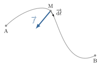
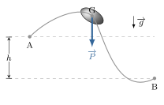
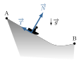

Lorsqu’une force s’exerce sur un point matériel \(M\), c’est sa composante le long de la
trajectoire qui modifie la norme de la vitesse.
Pour mesurer combien une force \(\overrightarrow{f}\) travaille à accélérer ou a ralentir un
point matériel lors de son déplacement entre les points \(A\) et \(B\), on définit une
grandeur, appelée travail mécanique de \(\overrightarrow{f}\) et noté
\( W_{A \to B} \) :
$$
\quad \boxed{ W_{A \to B} \overset{def}{=}
\int_{\mathscr{C}_{AB}} \overrightarrow{f} \cdot \overrightarrow{\rm{d}\ell} }
$$
où \(\overrightarrow{\rm{d}\ell}\) désigne le vecteur déplacement infinitésimal du point
\(M\) le long du trajet \(\mathscr{C}_{AB}\).

Circulation d’une force.
Le travail est donc une intégrale curviligne dont le résultat dépend, a priori, de la force
et du trajet.
On remarque que si la force fait un angle aigu avec le vecteur déplacement, alors
\( W_{A \to B} \gt 0\) : le travail est moteur.
Si, au contraire, la force fait constamment un angle obtus avec le vecteur déplacement,
\( W_{A \to B} \lt 0\) : le travail est résistant.
Enfin si la force est orthogonal au déplacement, alors \( W_{A \to B} = 0\) : la
force ne fait qu’incurver la trajectoire sans modifier la norme de la vitesse.
Dans le Système international d’unités, le travail s’exprime en joule (symbole :
\(\rm{J}\)). Une analyse dimensionnelle donne
$$
\quad [W] = \rm{ML^2T^{-2}} \quad \Rightarrow \quad 1 \rm{J} = 1 \rm{kg.m^2.s^{-2}}
$$
L’expression du travail élémentaire d’une force le long d’un déplacement
élémentaire \(\overrightarrow{\rm{d}\ell}\) se note :
$$
\quad \delta W = \overrightarrow{f} \cdot \overrightarrow{\rm{d}\ell}
$$
Notons que l’expression du travail se simplifie dans le cas d’une force uniforme :
pour un trajet \(\mathscr{C}_{AB}\) on obtient
$$
\quad W_{A \to B} = \overrightarrow{f} \cdot \overrightarrow{AB}
$$
Travail de la pesanteur
Calculons le travail de la force de pesanteur lorsque le centre de gravité \(G\) d’un corps
matériel se déplace du point \(A\) au point \(B\). Le poids étant une force constante, on a
$$
\quad \boxed{ W_{A \to B} = \overrightarrow{P} \cdot \overrightarrow{AB} = \pm mgh }
$$
où \(h\) désigne la dénivellation (\(h \gt 0\)). On mettra le signe \(+\) quand \(G\)
descend (travail moteur) et le signe \(-\) quand \(G\) monte (travail résistant).

Calcul du travail de pesanteur.
On remarque ici que le travail du poids ne dépend pas de la forme du trajet mais seulement
de la dénivellation. Par conséquent, si le centre d’inertie revient à sa position initiale,
le poids n’aura globalement produit aucun travail. On verra que le poids appartient à
l’ensemble des forces conservatives.
Travail d’un frottement solide
Un lugeur glisse sur une piste de forme quelconque et l’on suppose que la force de
frottement qu’exerce la neige sur la luge est constante et vaut \(T\). Calculons le travail
produit par les forces de contact après avoir parcouru une distance \(L\) entre les points
\(A\) et \(B\).
Tout d’abord, l’action normale à la surface ne travaille pas puisqu’elle est orthogonal à la
vitesse de glissement. Le travail des forces de contact s’identifie donc avec le travail de
la force de frottement :
$$
\quad W_{A \to B}
= \int_{\mathscr{C}_{AB}} \overrightarrow{T} \cdot \overrightarrow{\rm{d}\ell}
= - \int_{\mathscr{C}_{AB}} T \rm{d}\ell = -T L
$$

Calcul du travail des forces de frottement.
Contrairement au poids, le travail des forces de frottement dépend de la longueur du trajet
et donc de la forme du chemin parcouru.
Puissance d’une force
Pour mesurer à quel rythme une force travaille, on introduit la notion de puissance
mécanique.
La puissance d’une force, que nous noterons \(\mathscr{P}\), est le quotient du travail
fourni sur la durée lorsque cette durée tend vers \(0\) :
$$
\quad \mathscr{P} = \lim_{\delta t \to 0} \frac{\delta W}{\delta t}
=\lim_{\delta t\to 0}\frac{\overrightarrow{f}\cdot\overrightarrow{\rm{d}\ell}}{\delta t}
= \overrightarrow{f} \cdot \overrightarrow{v}
$$
où \(\overrightarrow{v}\) est la vitesse du point d’application de la force.
La puissance est donc une grandeur instantanée.
Finalement, le travail d’une force sur un trajet \(\mathscr{C}_{AB}\) peut se calculer à
partir de la puissance :
$$
\quad \boxed{ W_{A \to B} = \int_{t_A}^{t_B} \mathscr{P} \rm{d}t }
$$
où \(t_A\) et \(t_B\) sont les instants où le point matériel se trouve en \(A\) et \(B\).
Dans le Système international d’unités, la puissance s’exprime en watt (symbole :
\(\rm{W}\)). Une analyse dimensionnelle donne immédiatement \(1\rm{W}=1\rm{J.s^{-1}}\).
Théorème de l’énergie cinétique
Considérons un point matériel \(M\) de masse \(m\) animé d’une vitesse \(\overrightarrow v\)
dans un référentiel galiléen \(\mathcal{R}\) et soumis à un ensemble de forces
\(\overrightarrow{f_k}\).
La relation fondamentale de la dynamique nous donne
$$
\quad m \frac{\mathrm{d}\overrightarrow v}{\mathrm{d}t} = \sum_{k} \overrightarrow{f_k}
$$
Multiplions par \(\overrightarrow v\) cette expression :
$$
\quad m \frac{\mathrm{d}\overrightarrow v}{\mathrm{d}t} \overrightarrow v
= \sum_{k} \overrightarrow{f_k} \cdot \overrightarrow v
$$
En remarquant que
$$
\quad \frac{\mathrm{d} v^2}{\mathrm{d}t}
= \frac{\mathrm{d}}{\mathrm{d}t}\left( \overrightarrow v \cdot \overrightarrow v\right)
= 2 \times \overrightarrow v \cdot \frac{\mathrm{d}\overrightarrow v}{\mathrm{d}t}
$$
Il vient
$$
\quad \frac{\mathrm{d}}{\mathrm{d}t}\left( \frac{1}{2}mv^2\right)
= \sum_{k} \mathscr{P}_k
$$
Le terme de droite correspond à la somme des puissances mécaniques.
Le terme de gauche est la dérivée d’une quantitité qui ne dépend que du point matériel et de
son mouvement et est appelée énergie cinétique :
$$
\quad \boxed{ \mathscr{E}_c (M) \overset{def}{=} \frac{1}{2} m v^2 }
$$
Une analyse dimensionnelle donne \([\mathscr{E}_c] = ML^2T^{-2}\) ce qui correspond à la
dimension d’un travail.
Nous avons donc obtenu une équation d’évolution de l’énergie cinétique :
$$
\quad \frac{\mathrm{d}}{\mathrm{d}t} (\mathscr{E}_c) = \sum_k \mathscr{P}_k
$$
Si nous intégrons cette équation sur le temps entre les instants \(t_A\) et \(t_B\) , on
obtient :
$$
\quad \Delta \mathscr{E}_c \overset{def}{=} \mathscr{E}_c(B) - \mathscr{E}_c(A)
= \sum_k W_{A \to B}^k
$$
Théorème de l’énergie cinétique (TEC) :
Dans un référentiel galiléen \(\mathcal{R}\), l’énergie cinétique \(\mathscr{E}_c\) d’un
point matériel \(M\) subissant les actions \(\overrightarrow{f_k}\)vérifie la loi
d’évolution :
$$
\quad \boxed{ \begin{align}
& \frac{\mathrm{d}}{\mathrm{d}t}( \mathscr{E}_c ) = \sum_k \mathscr{P}_k \\
& \Delta \mathscr{E}_c = \sum_k W_{A \to B}^k
\end{align} }
$$
La première formulation est différentielle, la seconde intégrale.
Forces conservatives
Énergie potentielle
Par définition, une force est dite conservative lorsqu’elle s’exprime comme le
gradient d’une fonction scalaire de l’espace \(\mathscr{E}_p(M)\) dite énergie
potentielle d’interaction. En coordonnées cartésiennes cela donne :
$$
\quad \boxed{
\overrightarrow f = - \overrightarrow \nabla \mathscr{E}_p(x,y,z)
= \left( \begin{matrix}
-\frac{\partial \mathscr{E}_p}{\partial x} \\
-\frac{\partial \mathscr{E}_p}{\partial y} \\
-\frac{\partial \mathscr{E}_p}{\partial z}
\end{matrix} \right) }
$$
On remarque immédiatement que la fonction \(\mathscr{E}_p\) a bien la même dimension qu’un
travail puisque \([f]=[\mathscr{E}_p]/L\) ; ce qui explique son appellation.
L’énergie potentielle \(\mathscr{E}_p\) s’exprime donc en joule.
Détermination de l’énergie potentielle
Il y a deux façons d’obtenir l’énergie potentielle \(\mathscr{E}_p(x,y,z)\) associée à une
force :
Soit on cherche la fonction scalaire qui vérifie
\(\overrightarrow f = - \overrightarrow \nabla \mathscr{E}_p(x,y,z)\) en résolvant trois
équations aux dérivées partielles.
Soit on cherche la fonction scalaire à partir de la relation \( \delta W =
\overrightarrow{f} \cdot \overrightarrow{\rm{d}\ell} = -\rm{d}\mathscr{E}_p\).
Remarque :
La relation \(\delta W = -\rm{d}\mathscr{E}_p\) s’obtient de la manière
suivante :
Sachant qu’en coordonnées cartésiennes, le déplacement infinitésimal s’écrit
\(\overrightarrow{\mathrm{d}\ell} = \mathrm{d}x \overrightarrow{u_x}
+ \mathrm{d}y \overrightarrow{u_y} + \mathrm{d}z \overrightarrow{u_z}\), on a
$$
\quad \begin{aligned} \delta W & = \overrightarrow{f} \cdot \overrightarrow{\rm{d}\ell} \\
& = - \overrightarrow \nabla \mathscr{E}_p \cdot \overrightarrow{\mathrm{d}\ell} \\
& = - \left( \frac{\partial \mathscr{E}_p}{\partial x} \mathrm{d}x
+\frac{\partial \mathscr{E}_p}{\partial y} \mathrm{d}y
+\frac{\partial \mathscr{E}_p}{\partial z} \mathrm{d}z \right) \\
& = -\rm{d}\mathscr{E}_p
\end{aligned}
$$
Exemple : cherchons l’énergie potentielle associée à la force de pesanteur
\(\overrightarrow P=m\overrightarrow g\).
L’espace étant munis d’un repère cartésien d’axe \(Oz\) vertical ascendant, on obtient
$$
\quad \overrightarrow P = - m g \overrightarrow{u_z} \Rightarrow
\left\{
\begin{aligned}
0 & = -\frac{\partial \mathscr{E}_p}{\partial x} \\
0 & = -\frac{\partial \mathscr{E}_p}{\partial y} \\
- m g & = -\frac{\partial \mathscr{E}_p}{\partial z}
\end{aligned}
\right.
$$
Les deux premières relations traduisent le fait que l’énergie potentielle ne dépend que de
\(z\).
L’intégration de la dernière relation donne \(\mathscr{E}_p(z)=mgz+C^{te}\).
On peut aussi exprimer le travail élémentaire :
$$
\quad \delta W = \overrightarrow P \cdot \overrightarrow{\rm{d}\ell}
= -mg\rm{d}z = - \rm{d}\mathscr{E}_p
$$
Ce qui donne \(\mathscr{E}_p(z)=mgz+C^{te}\).
La détermination de l’énergie potentielle introduit toujours une constante scalaire. Cette
constante n’a aucun sens physique puisqu’elle n’intervient pas dans les grandeurs que l’on
peut mesurer (la force, le travail, etc.). C’est pourquoi, on peut arbitrairement la poser à
0 (ce qui revient à poser une origine des énergies potentielles) ou la conserver dans les
calculs sachant que les grandeurs physiques mesurables n’en dépendront pas.
Propriétés
Calculons le travail d’une force conservative \(\overrightarrow f\) le long d’un trajet
quelconque \(\mathscr{C}_{AB}\).
$$
\quad \begin{align} W_{A \to B} & =
\int_{\mathscr{C}_{AB}} \overrightarrow f \cdot \overrightarrow{\mathrm{d}\ell} \\
& = - \int_{\mathscr{C}_{AB}} \mathrm{d}\mathscr{E}_p \\
& = \mathscr{E}_p(A) - \mathscr{E}_p(B)
\end{align}
$$
Autrement dit, une force conservative produit un travail qui ne dépend pas de la forme du
trajet mais uniquement de la position des points A et B.
En conséquence, si le trajet se referme sur lui-même, le travail est nul.
La réciproque est vraie, c’est-à-dire qu’une force dont le travail dépensé est nul quel que
soit le circuit fermé parcouru par le point d’application est forcément conservative.
Pour résumer :
$$
\quad \oint_{\mathscr{C}} \overrightarrow f \cdot \overrightarrow{\rm{d}\ell} = 0
\quad \forall \mathscr{C} \quad \Leftrightarrow \quad
\overrightarrow f = - \overrightarrow \nabla \mathscr{E}_p
$$
Un autre propriété de la force conservative est qu’elle est toujours dirigée vers les
valeurs décroissantes de l’énergie potentielle. La force aura donc tendance à amener le
point matériel dans la zone d’énergie potentielle minimale.
Le tableau ci-dessous donne le caractère conservatif ou non de quelques interactions
classiques.
Force
Expression
Statut
Énergie potentielle
Gravitation
\(\overrightarrow f =-\mathscr{G} \frac{m_1m_2}{r^2} \overrightarrow{u}\)
Caractère conservatif ou non de quelques interactions classiques.
Théorème de l’énergie mécanique
Systèmes conservatifs
Lorsqu’un système dynamique est soumis à des forces conservatives ou des forces ne
travaillant pas, on dit que le système est conservatif.
Notons \(\mathscr{E}_p^k\) l’énergie potentielle associée aux différentes forces
\(\overrightarrow{f_k}\) que subit un point matériel \(M\) et appliquons le théorème de
l’énergie cinétique entre deux positions quelconques \(A\) et \(B\) de \(M\). On obtient
$$
\quad \mathscr{E}_c(B) - \mathscr{E}_c(A) = \sum_{k} W_{A \to B}^k
= - \sum_{k} \left( \mathscr{E}_p^k(B) - \mathscr{E}_p^k(A) \right)
$$
d’où l’on tire
$$
\quad \mathscr{E}_c(A) + \sum_{k} \mathscr{E}_p^k(A)
= \mathscr{E}_c(B) + \sum_{k} \mathscr{E}_p^k(B)
$$
Théorème de l’énergie mécanique
Pour tout système conservatif, la quantité, appelée énergie mécanique, somme de l’énergie
cinétique et des énergies potentielles, se conserve au cours du mouvement.
$$
\quad \boxed{\mathscr{E}_m \overset{def}{=}\mathscr{E}_c+\sum_{k}\mathscr{E}_p^k =C^{te} }
$$
Cette relation est appelée intégrale première du mouvement comme toute relation de
conservation ne faisant intervenir que les dérivées premières des coordonnées par rapport au
temps. Bien qu’en général, cette relation possède moins d’information que le PFD, elle
présente l’intérêt non négligeable de relier entre elles des grandeurs scalaires ce qui
évite le formalisme vectoriel. Par exemple, quand on cherche une relation entre vitesse et
position, il peut être judicieux d’écrire la relation de conservation de l’énergie
mécanique.
Systèmes non conservatifs
Lorsqu’une des forces n’est pas conservative, comme c’est le cas pour les forces de
frottement, on dit que le système n’est pas conservatif.
Le théorème de l’énergie cinétique donne alors :
$$
\quad \Delta \mathscr{E}_c = \sum_{k} W_{A \to B}^k + W_{A \to B}^{nc}
= - \sum_{k} \Delta \mathscr{E}_p^k + W_{A \to B}^{nc}
$$
où \(W_{A \to B}^{nc}\) désigne le travail des forces non conservatives.
Autrement dit, l’énergie mécanique ne se conserve pas :
$$
\quad \Delta \mathscr{E}_m = \mathscr{E}_m(B) - \mathscr{E}_m(A) = W_{A \to B}^{nc}
$$
Dans le cas des forces de frottement, le travail est résistant puisque la force est opposée
au sens du mouvement : \(W_{A \to B}^{nc}\leq 0\) et l’énergie mécanique diminue au
cours du temps.